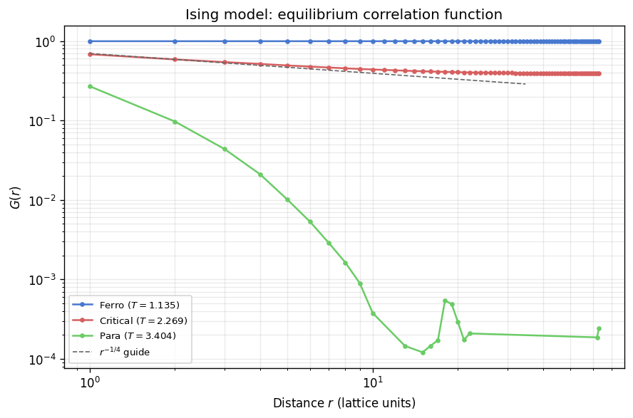
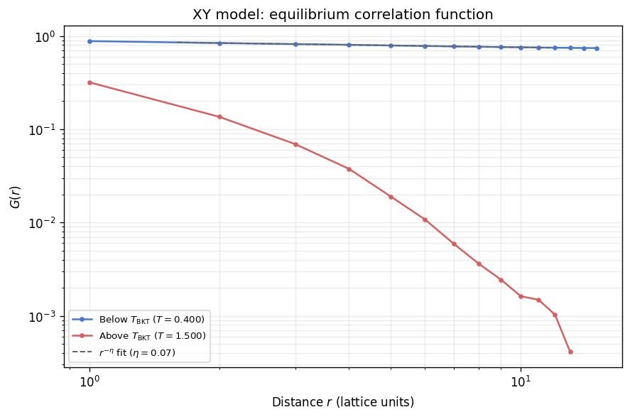
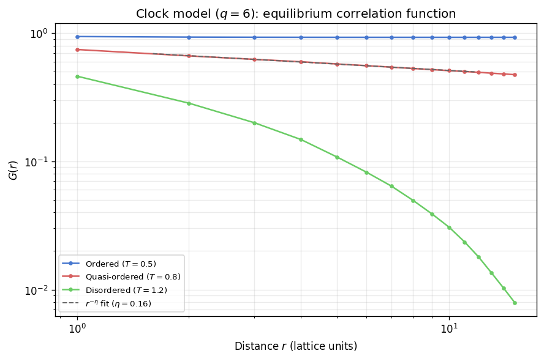
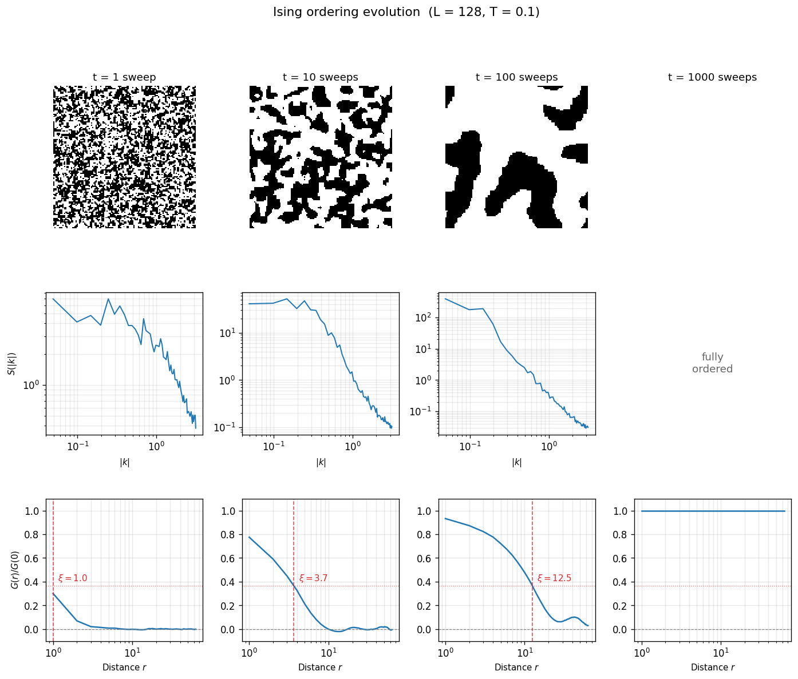
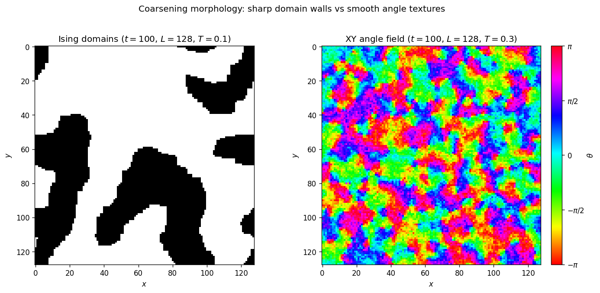
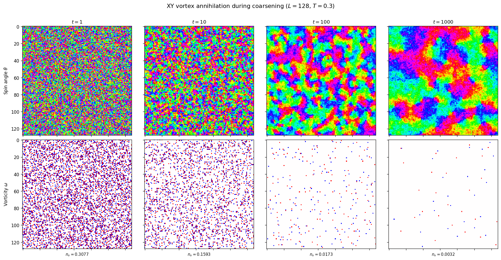
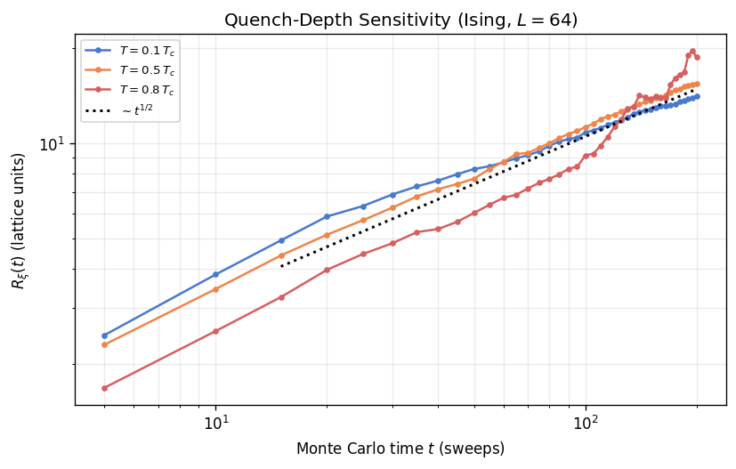
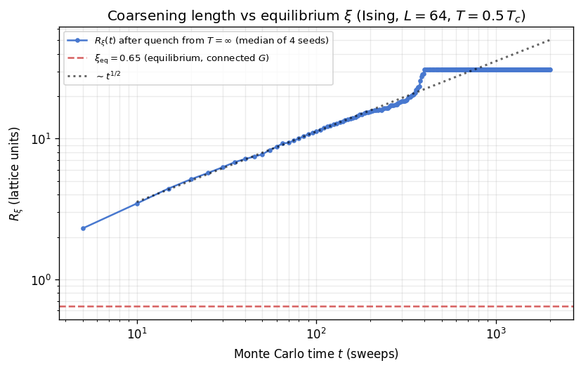
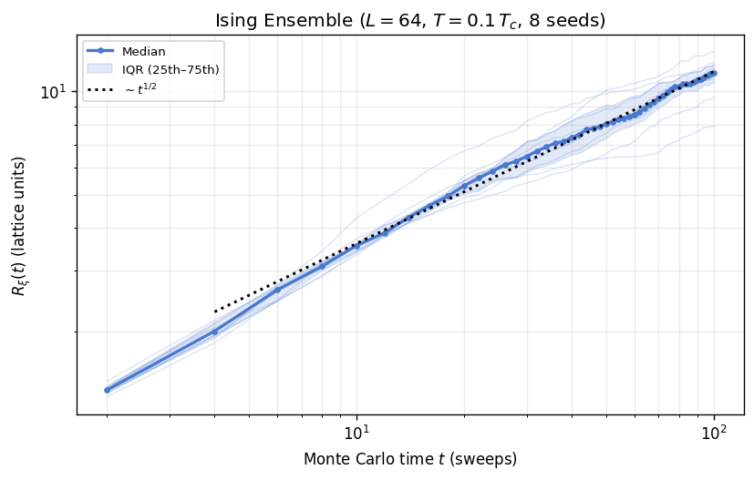

Correlation Functions and Coarsening Dynamics
Spatial correlations and coarsening dynamics are two views of the same spin field. The equilibrium correlation function \(G(r) = \langle \vec{s}_0 \cdot \vec{s}_r \rangle\) encodes the spatial structure of the ordered, quasi-ordered, or disordered phase at a given temperature. When a system is quenched from a disordered initial condition into the low-temperature phase, a characteristic coarsening length \(R(t)\) grows with Monte Carlo time. For a scalar order parameter under non-conserved dynamics the growth law is \(R(t) \sim t^{1/2}\) [1]. For the two-dimensional XY model the vortex-antivortex annihilation that drives coarsening adds a logarithmic correction, \(R(t) \sim (t/\ln t)^{1/2}\) [1] [2]. In the Ising model \(R(t)\) measures the size of domains separated by sharp walls; in the XY model it tracks the spacing between vortices and antivortices rather than any sharp domain boundary.
This notebook treats both topics for the three VibeSpin models: Ising, XY, and the discrete \(q = 6\) clock model. Part I computes equilibrium \(G(r)\) at representative temperatures. Part II follows the coarsening length after a quench. Single-run snapshots and short Ising ensembles are computed inline, while the long multi-seed kinetics traces of all three models are read from cached files written by the ordering_kinetics.py scripts. All stored outputs come from the inline fallback
paths (small lattices, one to eight seeds), and the prose says so where the numbers depend on it. The setup cell below imports the required libraries and defines the physical constants and color palette used throughout.
[1]:
from __future__ import annotations
from pathlib import Path
import matplotlib.pyplot as plt
import numpy as np
from models.clock_model import DiscreteClockSimulation
from models.ising_model import IsingSimulation
from models.xy_model import XYSimulation
from utils.observables import (
connected_correlation_length,
correlation_length_1e,
simulate_equilibrium_correlation,
)
# Cached data paths are relative to notebooks/, where the notebook runs.
TC_ISING = 2.0 / np.log(1.0 + np.sqrt(2.0))
T_BKT = 0.893
PALETTE = {
'ising': '#4878CF',
'xy': '#6ACC65',
'clock': '#EE854A',
'ferro': '#4878CF',
'crit': '#D65F5F',
'para': '#6ACC65',
}
plt.rcParams['figure.dpi'] = 120
print(f'T_c (Ising, exact) = {TC_ISING:.4f}')
print(f'T_BKT (XY, theoretical) = {T_BKT}')
T_c (Ising, exact) = 2.2692
T_BKT (XY, theoretical) = 0.893
Part I: Equilibrium Correlation Functions
The equilibrium spin-spin correlation function is computed via the structure-factor route: the Fourier transform of the spin field yields \(S(\mathbf{k})\), and radial averaging of the inverse transform gives \(G(r)\) normalized to \(G(0) = 1\). This Wiener-Khinchin approach avoids \(O(N^2)\) real-space pair counting.
Ising Correlations
The Ising model has three qualitatively different correlation regimes. In the ferromagnetic phase (\(T < T_c\)) correlations saturate to a long-range plateau. At the critical point (\(T = T_c\)) the decay is algebraic: \(G(r) \sim r^{-\eta}\) with the exact exponent \(\eta = 1/4\) [3]. In the paramagnetic phase (\(T > T_c\)) the decay is exponential with a correlation length \(\xi(T)\) that diverges as \(T \to T_c^+\).
[2]:
ising_corr_cache = Path('../results/ising/correlation_comparison.npz')
ising_corr_loaded = False
def _compute_ising_correlations(
*,
size: int = 128,
total_steps: int = 2_000,
sample_interval: int = 20,
eq_probe: int = 150,
eq_max: int = 6_000,
) -> dict:
temps = {
'ferro': 0.5 * TC_ISING,
'crit': TC_ISING,
'para': 1.5 * TC_ISING,
}
result = {}
for label, t in temps.items():
# Shared two-start helper. Below T_c a random start stranded in a stripe
# state ends the run through stuck detection and the ordered start is
# measured, so the stripe cannot skew G(r).
r, G = simulate_equilibrium_correlation(
model_cls=IsingSimulation, model_kwargs={}, size=size, temp=float(t),
seed=500, eq_probe=eq_probe, eq_max=eq_max,
meas_steps=total_steps, interval=sample_interval,
detect_stuck=label == 'ferro',
)
result[label] = (np.asarray(r, dtype=float), np.asarray(G, dtype=float), float(t))
return result
if ising_corr_cache.exists():
d = np.load(ising_corr_cache)
if all(k in d.files for k in ('r', 'G_ferro', 'G_crit', 'G_para', 'T_ferro', 'T_crit', 'T_para')):
r_ising = np.asarray(d['r'], dtype=float)
ising_corr = {
'ferro': (r_ising, np.asarray(d['G_ferro'], dtype=float), float(d['T_ferro'])),
'crit': (r_ising, np.asarray(d['G_crit'], dtype=float), float(d['T_crit'])),
'para': (r_ising, np.asarray(d['G_para'], dtype=float), float(d['T_para'])),
}
ising_corr_source = 'Loaded Ising correlations from cache'
ising_corr_loaded = True
if not ising_corr_loaded:
ising_corr = _compute_ising_correlations()
ising_corr_source = 'Computed fallback Ising correlations (L=128)'
print(ising_corr_source)
Computed fallback Ising correlations (L=128)
The log-log plot below shows \(G(r)\) at the three representative Ising temperatures, \(0.5\,T_c\), \(T_c\), and \(1.5\,T_c\), for the \(L = 128\) fallback run. A dashed \(r^{-1/4}\) guide is anchored to the critical curve at \(r = 2\); at short distances the critical data should follow it.
[3]:
fig, ax = plt.subplots(figsize=(7.5, 5))
for label, (r, G, t) in ising_corr.items():
mask = (r > 0) & (G > 1e-4)
regime = {'ferro': 'Ferro', 'crit': 'Critical', 'para': 'Para'}[label]
ax.loglog(r[mask], G[mask], 'o-', ms=3, lw=1.5, color=PALETTE[label],
label=rf'{regime} ($T = {t:.3f}$)')
# Anchor the r^{-1/4} reference to the critical data near r=2
r_c, G_c = ising_corr['crit'][:2]
mask_c = (r_c > 0) & (G_c > 0)
r_c_valid, G_c_valid = r_c[mask_c], G_c[mask_c]
if len(r_c_valid) >= 2:
# Use the point at index 1 (r ~ first positive separation) for anchoring
r_ref = float(r_c_valid[1])
pre_guide = float(G_c_valid[1]) * r_ref ** 0.25
r_guide = np.geomspace(r_c_valid[0], r_c_valid[-1] * 0.55, 60)
ax.loglog(r_guide, pre_guide * r_guide ** (-0.25), '--', color='0.4', lw=1.0,
label=r'$r^{-1/4}$ guide')
ax.set_xlabel('Distance $r$ (lattice units)')
ax.set_ylabel('$G(r)$')
ax.set_title('Ising model: equilibrium correlation function')
ax.grid(alpha=0.25, which='both')
ax.legend(fontsize=8)
fig.tight_layout()
plt.show()

In the ferromagnetic phase \(G(r)\) is flat at \(G \approx 1\) out to \(r = L/2\). At \(T = 0.5\,T_c\) the squared spontaneous magnetization is about 0.99, and the disconnected correlation function shown here plateaus at that value. At \(T_c\) the curve starts at \(G(1) \approx 0.68\) and follows the \(r^{-1/4}\) guide only for \(r \lesssim 4\); beyond that it bends away above the guide and levels off near \(G \approx 0.4\). This flattening is a finite-size property of the disconnected function, not a deviation from the critical exponent. On a finite lattice at \(T_c\) the configuration carries a nonzero magnetization with \(\langle m^2 \rangle \propto L^{-1/4}\) [3], and \(G(r)\) cannot decay below that level. A direct measurement of \(\eta = 1/4\) needs the connected function or a finite-size-scaling analysis of \(\langle m^2 \rangle\). The paramagnetic curve at \(1.5\,T_c\) decays exponentially, from 0.27 at \(r = 1\) to about \(10^{-3}\) near \(r = 8\). Beyond \(r \approx 10\) it reaches the statistical noise floor near \(10^{-4}\), and the scatter of those points carries no physical information.
XY Correlations
The XY model has algebraic correlations \(G(r) \sim r^{-\eta(T)}\) throughout the quasi-ordered phase below the Berezinskii-Kosterlitz-Thouless transition at \(T_{\mathrm{BKT}} \approx 0.893\) [6]. The exponent is set by the renormalized spin stiffness, \(\eta(T) = T / (2\pi \Upsilon_R(T))\). It rises continuously from zero at \(T = 0\) to the universal value \(\eta(T_{\mathrm{BKT}}) = 1/4\), where the stiffness jumps from \(2T_{\mathrm{BKT}}/\pi\) to
zero [4] [7]. Only at low temperature, where thermal fluctuations and bound vortex pairs barely reduce the stiffness, does this reduce to the spin-wave form \(\eta \approx T/(2\pi J)\); evaluated at \(T_{\mathrm{BKT}}\) that form would give 0.142 instead of 1/4. At \(T = 0.4\), the lower temperature used below, the spin-wave form gives \(\eta \approx 0.064\), and the leading low-temperature reduction of the stiffness,
\(\Upsilon_R \approx J - T/4\), raises the estimate to about 0.071. In either case \(G(r)\) should show only a slight downward slope on log-log axes. Above \(T_{\mathrm{BKT}}\) free vortices proliferate, the stiffness vanishes, and the correlation function decays exponentially, with a correlation length that diverges as \(\exp(b/\sqrt{T/T_{\mathrm{BKT}} - 1})\) on approach to the transition. The cell below loads precomputed \(G(r)\) at \(T = 0.4\) and \(T = 1.5\) from
../results/xy/correlation_comparison.npz, or falls back to an inline run at \(L = 64\) with one seed and 6000 measurement sweeps after two-start equilibration of at most 60,000 sweeps; at \(T = 0.4\) the random start needs about 35,000 sweeps to shed its vortex pairs.
[4]:
xy_corr_cache = Path('../results/xy/correlation_comparison.npz')
xy_corr_loaded = False
# At T = 0.4 the random start sheds its vortex pairs only after about 35,000
# sweeps on L = 64, so the equilibration cap is set well above.
_xy_corr_size = 64
_xy_corr_steps = 6_000
def _compute_xy_correlations(
*,
size: int = _xy_corr_size,
total_steps: int = _xy_corr_steps,
sample_interval: int = 15,
eq_probe: int = 150,
eq_max: int = 60_000,
) -> dict:
# Same temperatures as scripts/xy/correlation_comparison.py, so the fallback and
# the cached curves describe the same physics at lower statistics.
temps = {'low': 0.4, 'high': 1.5}
result = {}
for label, t in temps.items():
r, G = simulate_equilibrium_correlation(
model_cls=XYSimulation, model_kwargs={}, size=size, temp=float(t),
seed=510, eq_probe=eq_probe, eq_max=eq_max,
meas_steps=total_steps, interval=sample_interval,
)
result[label] = (np.asarray(r, dtype=float), np.asarray(G, dtype=float), float(t))
return result
if xy_corr_cache.exists():
d = np.load(xy_corr_cache)
if all(k in d.files for k in ('r_low', 'G_low', 'r_high', 'G_high')):
T_LOW_XY = float(d['T_low']) if 'T_low' in d.files else 0.5 * T_BKT
T_HIGH_XY = float(d['T_high']) if 'T_high' in d.files else 1.5 * T_BKT
xy_corr = {
'low': (np.asarray(d['r_low'], dtype=float), np.asarray(d['G_low'], dtype=float), T_LOW_XY),
'high': (np.asarray(d['r_high'], dtype=float), np.asarray(d['G_high'], dtype=float), T_HIGH_XY),
}
xy_corr_source = 'Loaded XY correlations from cache'
xy_corr_loaded = True
if not xy_corr_loaded:
xy_corr = _compute_xy_correlations()
xy_corr_source = (
f'Computed fallback XY correlations at L={_xy_corr_size}, '
f'{_xy_corr_steps} measurement steps (reduced for interactive runtime)'
)
print(xy_corr_source)
Computed fallback XY correlations at L=64, 6000 measurement steps (reduced for interactive runtime)
The plot below shows the two XY curves on log-log axes up to \(r = L/4\), where periodic wrap-around is still small, together with a power-law fit to the low-temperature curve over \(2 \le r \le 0.6 \cdot L/4\). The fitted exponent can be read directly against the estimates of 0.064 to 0.071 quoted above. A straight line on these axes is algebraic decay; curvature that steepens with \(r\) is the signature of the exponential decay expected above the transition.
[5]:
fig, ax = plt.subplots(figsize=(7.5, 5))
# Determine r cutoff: L/4 avoids periodic-boundary wrap-around artifacts.
r_sample = xy_corr['low'][0]
L_xy = int(2 * r_sample[-1]) if len(r_sample) > 0 else 128
r_max_xy = L_xy // 4
for label, (r, G, t) in xy_corr.items():
mask = (r > 0) & (r <= r_max_xy) & (G > 1e-4)
color = PALETTE['ferro'] if label == 'low' else PALETTE['crit']
regime = 'Below' if label == 'low' else 'Above'
ax.loglog(r[mask], G[mask], 'o-', ms=3, lw=1.5, color=color,
label=rf'{regime} $T_{{\mathrm{{BKT}}}}$ ($T = {t:.3f}$)')
# Power-law fit on the low-T data in the mid-range window.
r_low, G_low = xy_corr['low'][:2]
mask_low = (r_low > 0) & (r_low <= r_max_xy) & (G_low > 1e-4)
r_low_v, G_low_v = r_low[mask_low], G_low[mask_low]
if len(r_low_v) >= 4:
fit_sel = (r_low_v >= 2) & (r_low_v <= r_low_v[-1] * 0.6)
if np.sum(fit_sel) >= 3:
log_r_fit = np.log(r_low_v[fit_sel])
log_G_fit = np.log(G_low_v[fit_sel])
eta_fit, log_A = np.polyfit(log_r_fit, log_G_fit, 1)
eta_display = -eta_fit
r_lo = r_low_v[fit_sel][0] * 0.8
r_hi = r_low_v[fit_sel][-1] * 1.3
r_guide = np.geomspace(r_lo, r_hi, 60)
ax.loglog(r_guide, np.exp(log_A) * r_guide ** eta_fit, '--',
color='0.4', lw=1.2,
label=rf'$r^{{-\eta}}$ fit ($\eta = {eta_display:.2f}$)')
ax.set_xlabel('Distance $r$ (lattice units)')
ax.set_ylabel('$G(r)$')
ax.set_title('XY model: equilibrium correlation function')
ax.grid(alpha=0.25, which='both')
ax.legend(fontsize=8)
fig.tight_layout()
plt.show()

The low-temperature curve at \(T = 0.4\) is nearly flat on log-log axes, falling only from about 0.88 at \(r = 1\) to 0.74 at \(r = 16\), and the fit gives \(\eta \approx 0.066\). This lies between the bare spin-wave value 0.064 and the stiffness-corrected estimate of 0.071, on the side expected because thermal fluctuations lower \(\Upsilon_R\) below \(J\). With one seed at \(L = 64\) and a fit window of less than a decade in \(r\), the agreement in the second decimal should not be over-read, but the algebraic form is clear: correlations remain substantial out to \(L/4\). The curve at \(T = 1.5\) bends steadily downward, from 0.32 at \(r = 1\) to about \(4 \times 10^{-4}\) at \(r = 13\), consistent with exponential decay above \(T_{\mathrm{BKT}}\); no straight-line regime survives on these axes. In equilibrium terms, the contrast between the two curves is the BKT mechanism: below the transition vortices are bound in neutral pairs and only renormalize the stiffness, while above it free vortices screen the phase correlations on a finite length scale [4].
Clock Model Correlations
The \(q\)-state clock model restricts spin orientations to \(q\) evenly spaced angles \(\theta_k = 2\pi k / q\). This notebook uses the discrete implementation DiscreteClockSimulation with \(q = 6\), which stores integer state indices. For \(q \geq 5\) the model has two Kosterlitz-Thouless transitions at \(T_1 < T_2\) and therefore three correlation regimes [5]; for \(q = 6\) the most precise estimates are \(T_1 = 0.7014(11)\) and
\(T_2 = 0.9008(6)\) [6]. Below \(T_1\) the six-fold anisotropy is relevant, the system has true long-range order, and \(G(r)\) saturates to a nonzero plateau as in the Ising ferromagnet. Between \(T_1\) and \(T_2\) the anisotropy is irrelevant at long wavelengths and the model flows to the XY fixed line, so \(G(r) \sim r^{-\eta(T)}\) with \(\eta = T/(2\pi\Upsilon_R)\) as in the XY model. The exponent is bounded by
\(\eta(T_1) = 4/q^2 = 1/9 \approx 0.111\) at the lower transition and \(\eta(T_2) = 1/4\) at the upper one [5] [6]. At the representative quasi-ordered temperature \(T = 0.8\) the bare spin-wave form \(T/(2\pi J)\) gives 0.127. That is a lower bound, because the renormalized stiffness this close to \(T_2\) lies well below \(J\); the measured value should fall between 1/9 and 1/4. Above \(T_2\) correlations decay exponentially.
The cell below loads or computes \(G(r)\) at \(T = 0.5\) (ordered), \(T = 0.8\) (quasi-ordered), and \(T = 1.2\) (disordered); the fallback runs at \(L = 64\) with one seed.
[6]:
clock_corr_cache = Path('../results/clock/correlation_comparison.npz')
clock_corr_loaded = False
# Approximate q=6 clock transition temperatures (Challa and Landau 1986, as
# quoted by Tomita and Okabe, who obtain T1 = 0.7014 and T2 = 0.9008)
T1_CLOCK6 = 0.68 # lower KT transition
T2_CLOCK6 = 0.92 # upper KT transition
def _compute_clock_correlations(
*,
size: int = 64,
total_steps: int = 1_500,
sample_interval: int = 15,
eq_probe: int = 200,
eq_max: int = 20_000,
) -> dict:
# Discrete q=6 clock model, as in scripts/clock/correlation_comparison.py,
# through the shared two-start helper. Below T1 a stranded random start
# ends the run through stuck detection and the ordered start is measured.
temps = {
'ordered': 0.5,
'quasi': 0.8,
'disordered': 1.2,
}
result = {}
for label, t in temps.items():
r, G = simulate_equilibrium_correlation(
model_cls=DiscreteClockSimulation, model_kwargs={'q': 6}, size=size, temp=t,
seed=520, eq_probe=eq_probe, eq_max=eq_max, meas_steps=total_steps,
interval=sample_interval, detect_stuck=label == 'ordered',
)
result[label] = (np.asarray(r, dtype=float), np.asarray(G, dtype=float), float(t))
return result
if clock_corr_cache.exists():
d = np.load(clock_corr_cache)
expected_keys = ('r', 'G_ordered', 'G_quasi', 'G_disordered',
'T_ordered', 'T_quasi', 'T_disordered')
if all(k in d.files for k in expected_keys):
r_clock = np.asarray(d['r'], dtype=float)
clock_corr = {
'ordered': (r_clock, np.asarray(d['G_ordered'], dtype=float), float(d['T_ordered'])),
'quasi': (r_clock, np.asarray(d['G_quasi'], dtype=float), float(d['T_quasi'])),
'disordered': (r_clock, np.asarray(d['G_disordered'], dtype=float), float(d['T_disordered'])),
}
clock_corr_source = 'Loaded clock correlations from cache'
clock_corr_loaded = True
if not clock_corr_loaded:
clock_corr = _compute_clock_correlations()
clock_corr_source = 'Computed fallback clock correlations (discrete model, L=64, q=6)'
print(clock_corr_source)
Computed fallback clock correlations (discrete model, L=64, q=6)
The plot below shows all three clock curves on log-log axes, so the saturating plateau of the ordered phase, the straight-line algebraic decay of the quasi-ordered one, and the downward curvature of exponential decay above \(T_2\) can be compared on a single set of axes rather than read one at a time.
[7]:
fig, ax = plt.subplots(figsize=(7.5, 5))
clock_colors = {
'ordered': PALETTE['ferro'],
'quasi': PALETTE['crit'],
'disordered': PALETTE['para'],
}
clock_labels = {
'ordered': 'Ordered',
'quasi': 'Quasi-ordered',
'disordered': 'Disordered',
}
# Determine r cutoff: L/4 avoids periodic-boundary wrap-around artifacts.
r_sample = clock_corr['ordered'][0]
L_clock = int(2 * r_sample[-1]) if len(r_sample) > 0 else 128
r_max_clock = L_clock // 4
for label in ('ordered', 'quasi', 'disordered'):
r, G, t = clock_corr[label]
mask = (r > 0) & (r <= r_max_clock) & (G > 1e-4)
ax.loglog(r[mask], G[mask], 'o-', ms=3, lw=1.5, color=clock_colors[label],
label=rf'{clock_labels[label]} ($T = {t:.1f}$)')
# Power-law guide fitted to the quasi-ordered curve in the mid-range window
# where both short-distance lattice artefacts and finite-size rounding are small.
r_q, G_q = clock_corr['quasi'][:2]
mask_q = (r_q > 0) & (r_q <= r_max_clock) & (G_q > 1e-4)
r_q_valid, G_q_valid = r_q[mask_q], G_q[mask_q]
if len(r_q_valid) >= 4:
fit_sel = (r_q_valid >= 2) & (r_q_valid <= r_q_valid[-1] * 0.6)
if np.sum(fit_sel) >= 3:
log_r_fit = np.log(r_q_valid[fit_sel])
log_G_fit = np.log(G_q_valid[fit_sel])
eta_fit, log_A = np.polyfit(log_r_fit, log_G_fit, 1)
eta_display = -eta_fit # positive value for display
# Draw only over the fit window so the line sits on the data
r_lo = r_q_valid[fit_sel][0] * 0.8
r_hi = r_q_valid[fit_sel][-1] * 1.3
r_guide = np.geomspace(r_lo, r_hi, 60)
ax.loglog(r_guide, np.exp(log_A) * r_guide ** eta_fit, '--',
color='0.4', lw=1.2,
label=rf'$r^{{-\eta}}$ fit ($\eta = {eta_display:.2f}$)')
ax.set_xlabel('Distance $r$ (lattice units)')
ax.set_ylabel('$G(r)$')
ax.set_title('Clock model ($q = 6$): equilibrium correlation function')
ax.grid(alpha=0.25, which='both')
ax.legend(fontsize=8)
fig.tight_layout()
plt.show()

At \(T = 0.5\), below \(T_1 \approx 0.70\), the clock model shows true long-range order: \(G(r)\) is flat at about 0.93 over the whole range, because the spins are locked to one of the six clock orientations and only thermal excitations reduce the correlation below one. At \(T = 0.8\), between the two transitions, the curve is straight on log-log axes from \(r = 2\) to \(r = 16\) and the fit gives \(\eta \approx 0.16\). This lies inside the window \(1/9 \le \eta \le 1/4\) of the \(q = 6\) quasi-ordered phase and above the bare spin-wave value 0.127. Through \(\eta = T/(2\pi\Upsilon_R)\) it corresponds to a renormalized stiffness \(\Upsilon_R \approx 0.77\,J\), a sizeable reduction that is plausible this close to \(T_2 \approx 0.90\). The value comes from one seed at \(L = 64\) and a fit window of less than a decade, so it places \(T = 0.8\) inside the BKT phase rather than measuring \(\eta(0.8)\) precisely. At \(T = 1.2\), above \(T_2\), the correlation function falls from 0.46 at \(r = 1\) to below 0.01 at \(r = 16\) with a concave log-log shape, consistent with exponential decay and a finite correlation length.
The three-regime structure is specific to \(q \geq 5\). The intermediate quasi-ordered phase is the finite-\(q\) remnant of the BKT phase of the XY model: \(T_1\) decreases roughly as \(1/q^2\) while \(T_2\) stays close to \(T_{\mathrm{BKT}}\), so the phase widens with \(q\) and the XY model is recovered as \(q \to \infty\) [5] [6]. For \(q \leq 4\) there is a single second-order transition, but the universality class depends on \(q\). The case \(q = 2\) is the Ising model. The case \(q = 3\) is equivalent to the three-state Potts model with coupling \(3J/2\), with \(T_c \approx 1.49\). The case \(q = 4\) decouples into two independent Ising models with coupling \(J/2\), so \(T_c = 1.1346\) with Ising exponents [6].
Part II: Coarsening Dynamics
When a system is quenched instantaneously from infinite temperature to a temperature inside the ordered phase, the random initial configuration breaks up into locally ordered regions that grow with time. For the Ising model these regions are domains separated by sharp, curvature-driven walls. For the XY model there are no domains in the Ising sense. The random initial state contains free vortices and antivortices, about one per three plaquettes, and coarsening proceeds by their pairwise annihilation, with smooth spin-wave relaxation in between. The \(q = 6\) clock model quenched below \(T_1\) has a discrete order parameter and forms domains of the six clock states, but while those domains are small its texture also contains vortices where several domains meet. In all three cases a characteristic coarsening length \(R(t)\) can be extracted from the spatial correlation structure.
For a scalar or discrete order parameter with non-conserved dynamics, curvature-driven wall motion gives the Allen-Cahn law \(R(t) \sim t^{1/2}\) [1]. This covers the Ising model and, asymptotically, the clock model below \(T_1\), whose walls are expected to dominate at late times as in the Potts model [1]. The two-dimensional XY model is the marginal case. The attraction between a vortex and an antivortex at separation \(R\) falls off as \(1/R\), while the friction on a moving vortex grows as \(\ln R\), so the vortex spacing grows as \(R(t) \sim (t/\ln t)^{1/2}\) and the vortex density decays as \(n_v \sim \ln t / t\) [1] [2]. Bray, Briant, and Jervis showed that this logarithm breaks simple dynamical scaling at and below \(T_{\mathrm{BKT}}\): an ordered initial state relaxes with \(\xi(t) \sim t^{1/2}\), while a random initial state containing free vortices relaxes as \((t/\ln t)^{1/2}\) [2]. A pure power-law fit to XY data over a finite window therefore returns an apparent exponent below 1/2; values near 0.45 are typical of simulations of O(2) systems [1].
Measurement Methodology
The VibeSpin kinetics scripts use random-site Metropolis updates, which preserve physical time evolution, and record three length-scale proxies. \(R_{S(k)} = 2\pi \sum_k S(k) / \sum_k k\,S(k)\) is the inverse first moment of the circularly averaged structure factor. \(R_\xi\) is the interpolated \(1/e\) crossing of the lattice-axis pair correlation \(G(r)\), set to the largest available distance when no crossing exists. The third metric is model-specific: the mean intercept
length \(R_{\mathrm{MIL}}\) for Ising, and the vortex density \(n_v\) for XY and clock. Each script runs several seeds (--seeds N, four by default), stores the median trajectory with half the interquartile range as an error bar, and fits a pure power law \(R(t) = A\,t^n\) to the median for \(t \ge t_{\min}\). The median and the interquartile range are insensitive to a single seed that stalls in a metastable configuration. For XY the pure power law is a fit model rather than
the predicted law, so its exponent is an effective exponent.
Load Kinetics Data
The cell below reads ../results/<model>/ordering_kinetics.npz for the Ising, XY, and clock models, written by scripts/<model>/ordering_kinetics.py. The production defaults (\(L = 256\), four seeds, 400 sweeps for Ising and 1500 for XY and clock) are too expensive for an interactive notebook, so this section has no inline fallback: if the files are absent, the growth-curve plots and the exponent table below are skipped. Running
python -m scripts.generate_all --only ordering_kinetics from the repository root writes all three files.
[8]:
kinetics_data = {}
for model_name, cache_path in [
('Ising', Path('../results/ising/ordering_kinetics.npz')),
('XY', Path('../results/xy/ordering_kinetics.npz')),
('Clock', Path('../results/clock/ordering_kinetics.npz')),
]:
if cache_path.exists():
d = np.load(cache_path, allow_pickle=True)
if all(k in d.files for k in ('t', 'R_sk', 'R_xi', 'exponent_R_sk', 'exponent_xi')):
kinetics_data[model_name] = {
't': np.asarray(d['t'], dtype=float),
'R_sk': np.asarray(d['R_sk'], dtype=float),
'R_xi': np.asarray(d['R_xi'], dtype=float),
'R_sk_err': np.asarray(d['R_sk_err'], dtype=float) if 'R_sk_err' in d.files else None,
'R_xi_err': np.asarray(d['R_xi_err'], dtype=float) if 'R_xi_err' in d.files else None,
'third_metric': np.asarray(d['third_metric'], dtype=float) if 'third_metric' in d.files else None,
'third_metric_err': np.asarray(d['third_metric_err'], dtype=float) if 'third_metric_err' in d.files else None,
'third_label': str(d['third_metric_label']) if 'third_metric_label' in d.files else None,
'exp_sk': float(d['exponent_R_sk']),
'exp_xi': float(d['exponent_xi']),
'exp_third': float(d['exponent_third']) if 'exponent_third' in d.files else None,
'pre_sk': float(d['prefactor_R_sk']),
'pre_xi': float(d['prefactor_xi']),
'pre_third': float(d['prefactor_third']) if 'prefactor_third' in d.files else None,
'fit_min': int(d['fit_min']),
'size': int(d['size']),
'temp': float(d['temp']),
}
print(f'{model_name}: loaded from cache (L={int(d["size"])}, T={float(d["temp"]):.2f})')
else:
print(f'{model_name}: {cache_path} is incomplete, skipping')
else:
print(f'{model_name}: {cache_path} not found, skipping')
if not kinetics_data:
print('\nNo kinetics data found. From the repository root, run\n'
' python -m scripts.generate_all --only ordering_kinetics\n'
'to write ../results/<model>/ordering_kinetics.npz for all three models.')
Ising: ../results/ising/ordering_kinetics.npz not found, skipping
XY: ../results/xy/ordering_kinetics.npz not found, skipping
Clock: ../results/clock/ordering_kinetics.npz not found, skipping
No kinetics data found. From the repository root, run
python -m scripts.generate_all --only ordering_kinetics
to write ../results/<model>/ordering_kinetics.npz for all three models.
Ordering Evolution
The figure below shows a single Ising quench (\(L = 128\), \(T = 0.1\), random-site Metropolis, one seed) at \(t = 1, 10, 100, 1000\) Monte Carlo sweeps. The three rows show the spin configuration, the radially averaged structure factor \(S(|k|)\) on log-log axes, and the normalized correlation function \(G(r)/G(0)\) with its \(1/e\) crossing \(\xi\) marked by a red dashed line.
At \(t = 1\) the lattice is nearly random and \(\xi = 1.0\). By \(t = 10\) a labyrinth of small domains has formed and \(\xi = 3.6\). At \(t = 100\) a few large domains with smooth walls remain, \(\xi = 10.2\), and \(G(r)\) dips slightly below zero near \(r \approx 20\), the anti-correlation between neighboring domains. At \(t = 1000\) one domain covers roughly two thirds of the lattice, and the minority phase survives as a band that wraps through the periodic boundary. The system is therefore not fully ordered: \(\xi = 30.2\), about \(L/4\), and \(G(r)\) still falls to zero near \(r = L/2\). In the structure factor the low-\(k\) maximum moves to the smallest accessible wavevector as the domains grow, and from \(t = 100\) on the large-\(k\) side follows a power-law tail close to \(k^{-3}\), the Porod law \(S(k) \sim k^{-(d+1)}\) expected for sharp walls in two dimensions [1]. A band that spans the box has walls with little net curvature, so the Allen-Cahn driving force on it is weak. At \(T = 0.1\) any flip that roughens a straight wall costs \(4J\) and is accepted with probability \(e^{-40}\), so a configuration of this kind can persist for a very long time.
[9]:
from utils.observables import radial_average_sk
from utils.plotting import plot_ordering_evolution_snapshots
EVO_SIZE = 128
EVO_TEMP = 0.1
EVO_TARGETS = [1, 10, 100, 1000]
EVO_SEED = 42
sim_evo = IsingSimulation(size=EVO_SIZE, temp=EVO_TEMP, update='random', init_state='random', seed=EVO_SEED)
evo_snapshots, evo_gr, evo_sk = [], [], []
current_step = 0
for target in EVO_TARGETS:
for _ in range(target - current_step):
sim_evo.step()
current_step = target
evo_snapshots.append(sim_evo.spins.copy())
evo_gr.append(sim_evo.calculate_correlation_function())
k_vals, S_r = radial_average_sk(spins=sim_evo.spins)
evo_sk.append((k_vals, S_r))
fig_evo, axes_evo, xi_values = plot_ordering_evolution_snapshots(
targets=EVO_TARGETS,
snapshots=evo_snapshots,
gr_data=evo_gr,
sk_data=evo_sk,
size=EVO_SIZE,
temp=EVO_TEMP
)
plt.show()
print('xi at each snapshot (lattice units):', ', '.join(
f't={t}: {x:.1f}' if np.isfinite(x) else f't={t}: >L/2 (fully ordered)'
for t, x in zip(EVO_TARGETS, xi_values, strict=True)
))

xi at each snapshot (lattice units): t=1: 1.0, t=10: 3.6, t=100: 10.2, t=1000: 30.2
The \(1/e\) length grows from 1.0 to 30.2 over three decades of time, an average slope of about 0.49 on log-log axes, close to the Allen-Cahn value 1/2. Between \(t = 10\) and \(t = 100\) alone, the ratio 10.2/3.6 corresponds to a slope of 0.45. These are four points from one seed, and the last one is already limited by the box, so they illustrate the growth rather than measure an exponent. The \(R_\xi\) estimator of the kinetics scripts applies the same \(1/e\) criterion to the lattice-axis pair correlation and summarizes several seeds by their median, so the two measurements should agree in trend but not necessarily in prefactor.
Morphology Comparison: Domains vs Vortices
The two coarsening mechanisms described above produce qualitatively different spatial textures. In the Ising model, the binary spin variable creates sharp domain walls: each site is either \(+1\) or \(-1\), and the boundary between aligned regions is a well-defined one-dimensional curve. In the XY model, the continuous angle variable produces a smooth field that interpolates gradually between regions of different orientation. Domain walls in the Ising sense do not exist; instead, the non-trivial topological objects are point-like vortices (winding number \(\pm 1\)) where the angle field is singular. The side-by-side comparison below shows an Ising configuration and an XY angle field at the same Monte Carlo time (\(t = 100\)) after an infinite-temperature quench, making the structural contrast immediate.
[10]:
# XY simulation at same parameters as Ising evolution
sim_xy_morph = XYSimulation(size=EVO_SIZE, temp=0.3, update='random', init_state='random', seed=EVO_SEED)
for _ in range(100):
sim_xy_morph.step()
xy_angles = np.arctan2(sim_xy_morph.spins[..., 1], sim_xy_morph.spins[..., 0])
fig, (ax_ising, ax_xy) = plt.subplots(1, 2, figsize=(12, 5.5))
# Ising panel: reuse t=100 snapshot from ordering evolution
ax_ising.imshow(evo_snapshots[2], cmap='binary', interpolation='none', vmin=-1, vmax=1)
ax_ising.set_title(f'Ising domains ($t = 100$, $L = {EVO_SIZE}$, $T = {EVO_TEMP}$)')
ax_ising.set_xlabel('$x$')
ax_ising.set_ylabel('$y$')
# XY panel: angle colormap
im_xy = ax_xy.imshow(xy_angles, cmap='hsv', interpolation='none', vmin=-np.pi, vmax=np.pi)
ax_xy.set_title(f'XY angle field ($t = 100$, $L = {EVO_SIZE}$, $T = 0.3$)')
ax_xy.set_xlabel('$x$')
ax_xy.set_ylabel('$y$')
cbar = fig.colorbar(im_xy, ax=ax_xy, fraction=0.046, pad=0.04)
cbar.set_label(r'$\theta$')
cbar.set_ticks([-np.pi, -np.pi/2, 0, np.pi/2, np.pi])
cbar.set_ticklabels([r'$-\pi$', r'$-\pi/2$', r'$0$', r'$\pi/2$', r'$\pi$'])
fig.suptitle('Coarsening morphology: sharp domain walls vs smooth angle textures', y=1.02)
fig.tight_layout()
plt.show()

Vortex Annihilation During XY Coarsening
The smooth angle field shown above hides the topological defects that drive XY coarsening. A vortex is a plaquette around which the spin angle winds by \(+2\pi\) (winding number \(+1\)); around an antivortex it winds by \(-2\pi\). The infinite-temperature initial state is a dense gas of free vortices and antivortices, with one defect per three plaquettes on average for independent random angles. After the quench these free defects annihilate in vortex-antivortex pairs, so the vortex density \(n_v\) falls and the mean spacing \(R_v = n_v^{-1/2}\) grows, asymptotically as \((t/\ln t)^{1/2}\) [1] [2]. The vorticity field, computed from the discrete plaquette winding number, makes the annihilation directly visible. The panels below show the angle field and the vorticity map for one run (\(L = 128\), \(T = 0.3\), random-site Metropolis) at four times after the quench, with vortices in red (\(\omega = +1\)) and antivortices in blue (\(\omega = -1\)).
[11]:
VORTEX_TARGETS = [1, 10, 100, 1000]
VORTEX_SIZE = 128
VORTEX_TEMP = 0.3
sim_vortex = XYSimulation(size=VORTEX_SIZE, temp=VORTEX_TEMP, update='random',
init_state='random', seed=42)
vortex_angles = []
vortex_maps = []
vortex_densities = []
current_step_v = 0
for target in VORTEX_TARGETS:
for _ in range(target - current_step_v):
sim_vortex.step()
current_step_v = target
angles = np.arctan2(sim_vortex.spins[..., 1], sim_vortex.spins[..., 0])
vortex_angles.append(angles)
vortex_maps.append(sim_vortex.calculate_vorticity())
vortex_densities.append(sim_vortex.get_vortex_density())
fig_v, axes_v = plt.subplots(2, 4, figsize=(16, 8))
for col, (t_val, ang, vort, nv_val) in enumerate(
zip(VORTEX_TARGETS, vortex_angles, vortex_maps, vortex_densities, strict=True)):
# Top row: angle field
axes_v[0, col].imshow(ang, cmap='hsv', interpolation='none', vmin=-np.pi, vmax=np.pi)
axes_v[0, col].set_title(rf'$t = {t_val}$', fontsize=11)
axes_v[0, col].tick_params(labelbottom=False, labelleft=(col == 0))
if col == 0:
axes_v[0, col].set_ylabel(r'Spin angle $\theta$', fontsize=10)
# Bottom row: vorticity map
axes_v[1, col].imshow(vort, cmap='bwr', interpolation='none', vmin=-1, vmax=1)
axes_v[1, col].set_xlabel(rf'$n_v = {nv_val:.4f}$', fontsize=9)
axes_v[1, col].tick_params(labelbottom=False, labelleft=(col == 0))
if col == 0:
axes_v[1, col].set_ylabel(r'Vorticity $\omega$', fontsize=10)
fig_v.suptitle(
f'XY vortex annihilation during coarsening ($L = {VORTEX_SIZE}$, $T = {VORTEX_TEMP}$)',
fontsize=13, y=1.01)
fig_v.tight_layout()
plt.show()
print('Vortex densities:', ', '.join(
f't={t}: n_v={nv:.4f}' for t, nv in zip(VORTEX_TARGETS, vortex_densities, strict=True)))

Vortex densities: t=1: n_v=0.3077, t=10: n_v=0.1593, t=100: n_v=0.0173, t=1000: n_v=0.0032
At \(t = 1\) the angle field is essentially random and the vorticity map is dense with defects: \(n_v = 0.31\), close to the value 1/3 for independent random angles. By \(t = 10\) local alignment has begun and \(n_v = 0.16\), about half the initial density, as the closest vortex-antivortex pairs annihilate. At \(t = 100\) the angle field has organized into smooth patches roughly ten to twenty lattice spacings across, and \(n_v = 0.017\). By \(t = 1000\) about fifty defects remain on the \(128^2\) lattice (\(n_v = 0.0032\)), and the vortex spacing \(R_v = n_v^{-1/2} \approx 18\) lattice spacings is about one seventh of the box.
The decay between the last two frames is slower than \(1/t\). The density falls by a factor of 5.4 between \(t = 100\) and \(t = 1000\), where \(n_v \propto t^{-1}\) would give a factor of 10 and \(n_v \propto \ln t / t\), with the time scale inside the logarithm set to one sweep, gives about 6.7. One run with two late-time points cannot fix the logarithm, but the deviation from \(1/t\) goes in the direction predicted for the XY model [1] [2]. The sequence also shows the mechanism: the system does not coarsen by moving sharp walls, since the angle field has none, but by annihilating point defects, and the annihilation rate controls the growth of \(R_v\).
Domain Growth Curves
The cell below plots \(R_{S(k)}\) and \(R_\xi\) on log-log axes for each model with cached kinetics data, with the fitted exponents in the legend and the fit start \(t_{\min}\) marked by a vertical line. A straight line on these axes indicates power-law growth \(R \sim t^n\). For the Ising model the expected slope is the Allen-Cahn value \(n = 1/2\) [1]. For the XY model the expected law is \((t/\ln t)^{1/2}\), which a pure power-law fit renders as an effective exponent somewhat below 1/2 [1] [2]. The clock model quenched to \(T = 0.5 < T_1\) should approach \(n = 1/2\) at late times.
[12]:
if kinetics_data:
n_models = len(kinetics_data)
fig, axes = plt.subplots(1, n_models, figsize=(5.5 * n_models, 5), squeeze=False)
model_colors = {'Ising': PALETTE['ising'], 'XY': PALETTE['xy'], 'Clock': PALETTE['clock']}
for idx, (model_name, kd) in enumerate(kinetics_data.items()):
ax = axes[0, idx]
t = kd['t']
mask = t > 0
t_m = t[mask]
ax.loglog(t_m, kd['R_sk'][mask], '-', color=model_colors[model_name], lw=2,
label=rf'$R_{{S(k)}}$ ($n = {kd["exp_sk"]:.3f}$)')
if kd.get('R_sk_err') is not None:
err = kd['R_sk_err'][mask]
ax.fill_between(t_m, kd['R_sk'][mask] - err, kd['R_sk'][mask] + err,
color=model_colors[model_name], alpha=0.2)
ax.loglog(t_m, kd['R_xi'][mask], '--', color=model_colors[model_name], lw=2, alpha=0.7,
label=rf'$R_\xi$ ($n = {kd["exp_xi"]:.3f}$)')
if kd.get('R_xi_err') is not None:
err = kd['R_xi_err'][mask]
ax.fill_between(t_m, kd['R_xi'][mask] - err, kd['R_xi'][mask] + err,
color=model_colors[model_name], alpha=0.15)
fit_min = kd['fit_min']
t_fit = np.linspace(fit_min, t.max(), 50)
ax.loglog(t_fit, kd['pre_sk'] * t_fit ** kd['exp_sk'], ':',
color='0.3', lw=1.0, label='Power-law fit')
ax.axvline(fit_min, color='0.5', ls=':', lw=0.8)
ax.set_xlabel('Monte Carlo time $t$ (sweeps)')
ax.set_ylabel('Characteristic length $R(t)$ (lattice units)')
ax.set_title(f'{model_name} (L={kd["size"]}, T={kd["temp"]:.2f})')
ax.grid(alpha=0.25, which='both')
ax.legend(fontsize=8)
fig.suptitle('Coarsening kinetics after infinite-temperature quench', y=1.02)
fig.tight_layout()
plt.show()
else:
print('No kinetics data available for plotting.')
No kinetics data available for plotting.
No kinetics file was present when the stored outputs were produced, so the cell printed a notice instead of a figure and there is nothing to interpret here. With the cached data from scripts/<model>/ordering_kinetics.py, the Ising panel should show slopes close to 0.5 for both estimators beyond \(t_{\min}\), with \(R_{S(k)}\) and \(R_\xi\) separated by a roughly constant factor because both are proportional to the single scaling length of the domain pattern
[1]. The XY panel should show growth slower than \(t^{1/2}\) by the logarithmic factor [2]. The clock panel is expected to show an early regime influenced by vortices that crosses over to wall-driven \(t^{1/2}\) growth. Without the cache, the coarsening measurements in this notebook are limited to the single Ising quench above and the inline Ising quenches and ensembles below.
Quench-Depth Sensitivity
The Allen-Cahn theory predicts the same growth exponent \(n = 1/2\) for every quench into the ordered phase of a non-conserved scalar system. The prefactor and the duration of the early transient do depend on the quench temperature, through the wall mobility and the thermal fluctuations inside the domains [1]. The cell below loads precomputed coarsening data from scripts/ising/coarsening_analysis.py, which runs Ising quenches to \(0.1\,T_c\), \(0.5\,T_c\), and
\(0.8\,T_c\) with several seeds each and stores the median \(R_\xi(t)\) traces. If the cache is absent, the notebook computes the same quenches inline at \(L = 64\) with four seeds and 200 sweeps, sampled every 5 sweeps. The dotted \(t^{1/2}\) guide is anchored to the late-time part of the deepest quench.
[13]:
# --- A3: Quench-depth sensitivity ---
# Load from precomputed coarsening_analysis.npz; fall back to inline if absent.
coarsening_cache = Path('../results/ising/coarsening_analysis.npz')
coarsening_loaded = False
def coarsening_length(*, r: np.ndarray, G: np.ndarray) -> float:
"""Domain size R_xi from the 1/e crossing of G(r), interpolated.
When G(r) never falls below 1/e within half the lattice the domains span
the box, and the largest available distance is returned, as in
scripts/ising/coarsening_analysis.py.
"""
xi = correlation_length_1e(r=r, G=G / G[0])
return xi if np.isfinite(xi) else float(r[-1])
if coarsening_cache.exists():
_cd = np.load(coarsening_cache)
if 'quench_times' in _cd.files and 'quench_fracs' in _cd.files:
quench_fracs = list(_cd['quench_fracs'])
quench_temps = list(_cd['quench_temps'])
times_quench = np.asarray(_cd['quench_times'])
L_quench = int(_cd['size'])
n_seeds_quench = int(_cd['quench_n_seeds'])
quench_results = {}
for i, frac in enumerate(quench_fracs):
quench_results[frac] = np.asarray(_cd[f'quench_{i}_median'])
coarsening_loaded = True
print(f'Loaded quench-depth data from cache (L={L_quench}, '
f'{len(quench_fracs)} temps, {n_seeds_quench} seeds each)')
if not coarsening_loaded:
quench_fracs = [0.1, 0.5, 0.8]
quench_temps = [f * TC_ISING for f in quench_fracs]
L_quench = 64
n_steps_quench = 200
sample_ivl = 5
n_seeds_quench = 4
quench_results = {}
for frac, T_q in zip(quench_fracs, quench_temps, strict=True):
seed_traces = []
for s in range(n_seeds_quench):
sim = IsingSimulation(size=L_quench, temp=T_q, update="random",
init_state="random", seed=42 + s)
xi_series = []
for t in range(1, n_steps_quench + 1):
sim.step()
if t % sample_ivl == 0:
# Measure the current configuration at time t; averaging
# helpers would advance the lattice by another sweep first.
r_arr, G_arr = sim.calculate_correlation_function()
xi_series.append(coarsening_length(r=r_arr, G=G_arr))
seed_traces.append(np.array(xi_series))
quench_results[frac] = np.median(seed_traces, axis=0)
times_quench = np.arange(sample_ivl, n_steps_quench + 1, sample_ivl)
print(f'Computed fallback quench-depth data (L={L_quench})')
# Fit guide-line prefactor from deepest quench in late-time window
deep = quench_results[quench_fracs[0]]
fit_mask = times_quench >= times_quench[len(times_quench) // 3]
prefactor_guide = np.exp(
np.mean(np.log(deep[fit_mask]) - 0.5 * np.log(times_quench[fit_mask])))
fig, ax = plt.subplots(figsize=(7, 4.5))
quench_colors = [PALETTE['ferro'], PALETTE['clock'], PALETTE['crit']]
for frac, color in zip(quench_fracs, quench_colors, strict=True):
ax.loglog(times_quench, quench_results[frac], "o-", ms=3, lw=1.5,
color=color, label=rf"$T = {frac}\,T_c$")
t_guide = np.linspace(times_quench[2], times_quench[-1], 50)
ax.loglog(t_guide, prefactor_guide * t_guide**0.5,
"k:", lw=1.8, label=r"$\sim t^{1/2}$")
ax.set_xlabel("Monte Carlo time $t$ (sweeps)")
ax.set_ylabel(r"$R_\xi(t)$ (lattice units)")
ax.set_title(f"Quench-Depth Sensitivity (Ising, $L = {L_quench}$)")
ax.grid(alpha=0.25, which='both')
ax.legend(fontsize=8)
fig.tight_layout()
plt.show()
Computed fallback quench-depth data (L=64)

The ordering of the three curves changes during the run. Up to \(t \approx 50\) the deepest quench (\(0.1\,T_c\)) has the largest \(R_\xi\) and the shallowest (\(0.8\,T_c\)) the smallest, in part because thermal spin flips inside the domains at \(0.8\,T_c\) lower \(G(r)\) at short distances and move its \(1/e\) crossing inward. Near \(t \approx 60\) the \(0.5\,T_c\) curve overtakes the \(0.1\,T_c\) curve, and after \(t \approx 120\) the \(0.8\,T_c\) curve rises above both, reaching about 18 lattice spacings at \(t = 200\) against about 15.5 and 14 for the other two. The deep quench falls behind because at \(T = 0.1\,T_c \approx 0.23\) every energy-raising flip is suppressed by a factor of order \(e^{-4J/T} \approx 10^{-8}\), so walls advance only through zero-energy flips at corners and steps; at higher temperature thermal roughening makes the walls more mobile. The late rise and jaggedness of the \(0.8\,T_c\) curve also reflect the box. On \(L = 64\) the estimator cannot exceed 31 lattice spacings, and once individual seeds approach that limit, a four-seed median becomes noisy.
Over this short window the slopes are therefore not equal. The deepest quench grows somewhat more slowly than the \(t^{1/2}\) guide at late times, the \(0.5\,T_c\) quench follows it closely, and the \(0.8\,T_c\) quench is steeper. Allen-Cahn universality concerns the asymptotic exponent in the window \(1 \ll R(t) \ll L\). With \(R\) between about 2 and 18 on a 64-site lattice and four seeds per temperature, the fallback data show the quench-dependent prefactors and transients clearly but cannot test the exponent at the 10% level; that needs production runs with larger lattices and more seeds [1].
Equilibrium Correlation Length and the End of Coarsening
Parts I and II measure different aspects of spatial order, and this section compares them directly for one Ising quench. The equilibrium correlation length \(\xi_{\mathrm{eq}}\) is the \(1/e\) crossing of the connected correlation function, computed after subtracting the mean spin of each configuration, in an equilibrated simulation. Below \(T_c\) it measures the size of thermal fluctuations inside an ordered domain, not a domain size; the disconnected function plateaus at
\(m^2\) and never crosses \(1/e\). The coarsening length \(R_\xi(t)\) is the \(1/e\) crossing of the disconnected \(G(r)\) of the instantaneous configuration after a quench from \(T = \infty\), and measures the domain size. The cell below loads both quantities from scripts/ising/coarsening_analysis.py. If the cache is absent, it computes them inline at \(L = 64\) and \(T = 0.5\,T_c\). There, \(\xi_{\mathrm{eq}}\) comes from a run equilibrated with the
shared two-start helper prepare_equilibrated_simulation and then measured with connected_correlation_length over 2000 sweeps sampled every 20. \(R_\xi(t)\) is the median over four seeds for 2000 sweeps, evaluated with the coarsening_length helper defined above, which wraps the shared correlation_length_1e and returns the largest available distance when \(G(r)\) never falls below \(1/e\).
[14]:
# --- A2: equilibrium xi_eq (connected G) vs coarsening R_xi(t) ---
# Load from precomputed cache; fall back to inline if absent.
bridge_loaded = False
if coarsening_cache.exists():
_cd = np.load(coarsening_cache)
if 'bridge_times' in _cd.files and 'bridge_median' in _cd.files:
L_bridge = int(_cd['size'])
T_bridge = float(_cd['bridge_temp'])
xi_eq = float(_cd['bridge_xi_eq'])
times_bridge = np.asarray(_cd['bridge_times'])
Rxi_bridge = np.asarray(_cd['bridge_median'])
n_seeds_bridge = int(_cd['bridge_n_seeds'])
bridge_loaded = True
print(f'Loaded crossover data from cache (L={L_bridge}, '
f'T={T_bridge:.3f}, xi_eq={xi_eq:.1f}, {n_seeds_bridge} seeds)')
if not bridge_loaded:
from utils.equilibration import prepare_equilibrated_simulation
L_bridge = 64
T_bridge = 0.5 * TC_ISING
# Equilibrium correlation length from the connected correlation function:
# below T_c the disconnected one plateaus at m^2 and has no 1/e crossing.
sim_eq, outcome_eq = prepare_equilibrated_simulation(
model_cls=IsingSimulation, model_kwargs={}, size=L_bridge, temp=T_bridge, seed=300,
chunk_size=150, max_steps=6000, detect_stuck=True,
)
xi_eq = (
connected_correlation_length(sim=sim_eq, meas_steps=2000, sample_interval=20)
if outcome_eq.certified else float('nan')
)
n_steps_bridge = 2000
sample_ivl_bridge = 5
n_seeds_bridge = 4
times_bridge = np.arange(sample_ivl_bridge, n_steps_bridge + 1, sample_ivl_bridge)
all_Rxi_bridge = np.zeros((n_seeds_bridge, len(times_bridge)))
for s in range(n_seeds_bridge):
sim_bridge = IsingSimulation(size=L_bridge, temp=T_bridge, update="random",
init_state="random", seed=42 + s)
rec = 0
for t in range(1, n_steps_bridge + 1):
sim_bridge.step()
if t % sample_ivl_bridge == 0:
r_b, G_b = sim_bridge.calculate_correlation_function()
all_Rxi_bridge[s, rec] = coarsening_length(r=r_b, G=G_b)
rec += 1
Rxi_bridge = np.median(all_Rxi_bridge, axis=0)
print(f'Computed fallback crossover data (L={L_bridge})')
# Allen-Cahn guide fitted to early growth region
early_mask = (times_bridge >= 20) & (times_bridge <= 200)
pre_bridge_guide = np.exp(
np.mean(np.log(Rxi_bridge[early_mask]) - 0.5 * np.log(times_bridge[early_mask])))
fig, ax = plt.subplots(figsize=(7, 4.5))
ax.loglog(times_bridge, Rxi_bridge, "o-", ms=3, color=PALETTE['ising'], lw=1.5,
label=rf"$R_\xi(t)$ after quench from $T=\infty$ (median of {n_seeds_bridge} seeds)")
ax.axhline(xi_eq, color=PALETTE['crit'], ls="--", lw=1.5,
label=rf"$\xi_{{\mathrm{{eq}}}} = {xi_eq:.2f}$ (equilibrium, connected $G$)")
t_g2 = np.linspace(times_bridge[1], times_bridge[-1], 50)
ax.loglog(t_g2, pre_bridge_guide * t_g2**0.5,
"k:", lw=1.8, alpha=0.6, label=r"$\sim t^{1/2}$")
ax.set_xlabel("Monte Carlo time $t$ (sweeps)")
ax.set_ylabel(r"$R_\xi$ (lattice units)")
ax.set_title(
rf"Coarsening length vs equilibrium $\xi$ (Ising, $L = {L_bridge}$, $T = {T_bridge / TC_ISING:.1f}\,T_c$)")
ax.grid(alpha=0.25, which='both')
ax.legend(fontsize=8)
fig.tight_layout()
plt.show()
print(f"Equilibrium correlation length (connected G(r), 1/e criterion): "
f"xi_eq = {xi_eq:.2f} lattice spacings")
print(f"Median R_xi at the last sample (t = {int(times_bridge[-1])}): "
f"{Rxi_bridge[-1]:.1f} lattice spacings; first reached at "
f"t = {int(times_bridge[np.argmax(Rxi_bridge >= Rxi_bridge[-1])])}")
Computed fallback crossover data (L=64)

Equilibrium correlation length (connected G(r), 1/e criterion): xi_eq = 0.65 lattice spacings
Median R_xi at the last sample (t = 2000): 31.0 lattice spacings; first reached at t = 400
Deep in the ordered phase the two lengths differ by more than an order of magnitude and never meet. The equilibrium value is \(\xi_{\mathrm{eq}} = 0.65\) lattice spacings: at \(0.5\,T_c\) the thermal fluctuations of an ordered domain are mostly isolated flipped spins, correlated over less than one lattice spacing. The coarsening length starts above this value and follows the \(t^{1/2}\) guide from \(t \approx 10\) to \(t \approx 300\), growing from about 3.5 to about 18. Between \(t \approx 330\) and \(t = 400\) the median jumps to 31 lattice spacings, the largest separation the estimator resolves on \(L = 64\), and stays there to \(t = 2000\). A four-seed median can sit at that limit only when at least three seeds do, so in most runs the last domain walls have annihilated and one domain fills the lattice. Coarsening in the ordered phase therefore ends when \(R_\xi(t)\) reaches the system size, not when it reaches \(\xi_{\mathrm{eq}}\); in an infinite system quenched below \(T_c\) the domains grow without bound [1]. The equilibrium correlation length limits domain growth only for a quench to \(T > T_c\), where the domains stop growing once they reach the finite \(\xi_{\mathrm{eq}}\) of the paramagnet.
Three Estimators of the Ising Domain Size
The cell below compares the three Ising length estimators of the cached kinetics run. Each measures the same coarsening process through a different observable. \(R_{S(k)} = 2\pi \sum_k S(k) / \sum_k k\,S(k)\) is set by the mean wavevector of the circularly averaged structure factor. \(R_\xi\) is the \(1/e\) crossing of the pair correlation \(G(r)\) along the lattice axes, and it includes the anti-correlation between neighboring domains on opposite sides of a wall. \(R_{\mathrm{MIL}}\) is the stereological mean intercept length: the lattice size divided by the mean number of wall crossings per row or column. It is a direct chord measure of the domain width and does not depend on a Fourier transform or on the shape of \(G(r)\).
In the scaling regime all three are proportional to the same length, so they should share the growth exponent and differ only in their prefactors [1]. The prefactors, and therefore the vertical ordering of the curves, follow from the estimator definitions and are not universal. In the plot the vertical dotted line marks the fit start \(t_{\min}\), and only points to its right enter the power-law fits. The dotted black reference is a \(t^{1/2}\) line anchored to the \(R_{S(k)}\) trace at the geometric midpoint of the time range.
[15]:
if 'Ising' in kinetics_data:
kd = kinetics_data['Ising']
t_arr = kd['t']
fit_start = kd['fit_min']
fig, ax = plt.subplots(figsize=(8, 5.5))
color_sk = PALETTE['ising']
color_xi = PALETTE['crit']
color_mil = '#8B60BD'
ax.loglog(t_arr, kd['R_sk'], 'o-', color=color_sk, lw=1.5, ms=5,
label=rf"$R_{{S(k)}}$: structure-factor peak ($n = {kd['exp_sk']:.3f}$)")
if kd.get('R_sk_err') is not None:
ax.fill_between(t_arr, kd['R_sk'] - kd['R_sk_err'], kd['R_sk'] + kd['R_sk_err'],
color=color_sk, alpha=0.2)
ax.loglog(t_arr, kd['R_xi'], 's-', color=color_xi, lw=1.5, ms=5,
label=rf"$R_\xi$: correlation-fn decay ($n = {kd['exp_xi']:.3f}$)")
if kd.get('R_xi_err') is not None:
ax.fill_between(t_arr, kd['R_xi'] - kd['R_xi_err'], kd['R_xi'] + kd['R_xi_err'],
color=color_xi, alpha=0.15)
t_fit = np.linspace(fit_start, t_arr.max(), 60)
ax.loglog(t_fit, kd['pre_sk'] * t_fit ** kd['exp_sk'], '--', color=color_sk, lw=1.0, alpha=0.55)
ax.loglog(t_fit, kd['pre_xi'] * t_fit ** kd['exp_xi'], '--', color=color_xi, lw=1.0, alpha=0.55)
if (kd['third_metric'] is not None
and kd['exp_third'] is not None
and np.isfinite(kd['exp_third'])):
ax.loglog(t_arr, kd['third_metric'], 'D-', color=color_mil, lw=1.5, ms=5,
label=rf"$R_{{\mathrm{{MIL}}}}$: mean intercept length ($n = {kd['exp_third']:.3f}$)")
if kd.get('third_metric_err') is not None:
ax.fill_between(t_arr, kd['third_metric'] - kd['third_metric_err'],
kd['third_metric'] + kd['third_metric_err'],
color=color_mil, alpha=0.2)
pre_third = kd.get('pre_third')
if pre_third is not None and np.isfinite(pre_third):
ax.loglog(t_fit, pre_third * t_fit ** kd['exp_third'], '--',
color=color_mil, lw=1.0, alpha=0.55)
# Allen-Cahn reference anchored to the geometric midpoint of the time range
t_mid = np.sqrt(t_arr.min() * t_arr.max())
r_mid = np.interp(t_mid, t_arr, kd['R_sk'])
ref_pre = r_mid / (t_mid ** 0.5)
t_ref = np.linspace(t_arr.min(), t_arr.max(), 80)
ax.loglog(t_ref, ref_pre * t_ref ** 0.5, 'k:', lw=1.8, label='Allen-Cahn $t^{1/2}$')
ax.axvline(fit_start, color='0.5', ls=':', lw=0.9, label=f'Fit start ($t = {fit_start}$)')
ax.set_xlabel('Monte Carlo time $t$ (sweeps)')
ax.set_ylabel('Characteristic length $R(t)$ (lattice units)')
ax.set_title(
f'Ising: three independent coarsening-length estimators'
f' (L={kd["size"]}, T={kd["temp"]:.2f})'
)
ax.grid(alpha=0.25, which='both')
ax.legend(fontsize=9)
fig.tight_layout()
plt.show()
else:
print('No Ising kinetics data available for comparison plot.')
No Ising kinetics data available for comparison plot.
The stored outputs contain no Ising kinetics cache, so the comparison plot was skipped; python -m scripts.generate_all --only ising/ordering_kinetics produces it. The expected result is three nearly parallel lines with slopes near 1/2 beyond \(t_{\min}\), at heights fixed by the estimator definitions. Larger deviations are expected at early times, while the domains are only a few lattice spacings across and the walls have not yet sharpened into well-defined interfaces, because each
estimator responds differently to that diffuse texture [1]. The single-run snapshots above and the inline ensembles in this section show only \(R_\xi\).
Stochastic Ensemble: Run-to-Run Variability
A single coarsening trajectory is one realization of a stochastic process. Independent runs from different seeds follow the same average growth law but fluctuate around it. To show this run-to-run variability, the cell below loads an 8-seed Ising ensemble (\(L = 64\), \(T = 0.1\,T_c\), 100 sweeps) precomputed by scripts/ising/coarsening_analysis.py and plots the individual \(R_\xi(t)\) traces together with the ensemble median and the interquartile range (IQR). The IQR band shows
where the central half of the ensemble falls at each time. If the cache is absent, the same ensemble (8 seeds, 100 sweeps sampled every 2 sweeps) is computed inline.
[16]:
# --- B9: Stochastic ensemble ---
# Load from precomputed cache; fall back to inline if absent.
ens_loaded = False
if coarsening_cache.exists():
_ed = np.load(coarsening_cache)
if 'ens_times' in _ed.files and 'ens_seeds' in _ed.files:
times_ens = np.asarray(_ed['ens_times'])
ensemble_Rxi = np.asarray(_ed['ens_seeds'])
median_Rxi = np.asarray(_ed['ens_median'])
q25 = np.asarray(_ed['ens_q25'])
q75 = np.asarray(_ed['ens_q75'])
N_SEEDS = int(_ed['ens_n_seeds'])
L_ens = int(_ed['size'])
T_ens = float(_ed['ens_temp'])
ens_loaded = True
print(f'Loaded ensemble data from cache (L={L_ens}, '
f'T={T_ens:.3f}, {N_SEEDS} seeds)')
if not ens_loaded:
N_SEEDS = 8
L_ens = 64
T_ens = 0.1 * TC_ISING
n_steps_ens = 100
sample_ivl_ens = 2
times_ens = np.arange(sample_ivl_ens, n_steps_ens + 1, sample_ivl_ens)
ensemble_Rxi = np.zeros((N_SEEDS, len(times_ens)))
for s_idx in range(N_SEEDS):
sim = IsingSimulation(size=L_ens, temp=T_ens, update="random",
init_state="random", seed=100 + s_idx)
rec_idx = 0
for t in range(1, n_steps_ens + 1):
sim.step()
if t % sample_ivl_ens == 0:
r_arr, G_arr = sim.calculate_correlation_function()
ensemble_Rxi[s_idx, rec_idx] = coarsening_length(r=r_arr, G=G_arr)
rec_idx += 1
median_Rxi = np.median(ensemble_Rxi, axis=0)
q25 = np.percentile(ensemble_Rxi, 25, axis=0)
q75 = np.percentile(ensemble_Rxi, 75, axis=0)
print(f'Computed fallback ensemble data (L={L_ens})')
fig, ax = plt.subplots(figsize=(7, 4.5))
for s_idx in range(N_SEEDS):
ax.loglog(times_ens, ensemble_Rxi[s_idx], "-",
color=PALETTE['ising'], alpha=0.2, lw=0.8)
ax.loglog(times_ens, median_Rxi, "o-", ms=3,
color=PALETTE['ising'], lw=2, label="Median")
ax.fill_between(times_ens, q25, q75,
color=PALETTE['ising'], alpha=0.15, label="IQR (25th\u201375th)")
# Allen-Cahn guide fitted to late-time median
late_mask = times_ens >= times_ens[len(times_ens) // 3]
pre_ens_guide = np.exp(
np.mean(np.log(median_Rxi[late_mask]) - 0.5 * np.log(times_ens[late_mask])))
t_g = np.linspace(times_ens[1], times_ens[-1], 50)
ax.loglog(t_g, pre_ens_guide * t_g**0.5, "k:", lw=1.8, label=r"$\sim t^{1/2}$")
ax.set_xlabel("Monte Carlo time $t$ (sweeps)")
ax.set_ylabel(r"$R_\xi(t)$ (lattice units)")
ax.set_title(
f"Ising Ensemble ($L = {L_ens}$, $T = 0.1\\,T_c$, {N_SEEDS} seeds)")
ax.grid(alpha=0.25, which='both')
ax.legend(fontsize=8)
fig.tight_layout()
plt.show()
Computed fallback ensemble data (L=64)

For \(t \lesssim 10\) the eight traces almost coincide: each \(64^2\) lattice still contains many small domains, so the domain size self-averages. The spread grows as the domains coarsen and fewer of them share the box; by \(t = 100\) the individual traces range from about 8 to 13 lattice spacings around a median of about 11. The median follows the \(t^{1/2}\) guide from \(t \approx 10\) to \(t = 100\) and lies below it only at the earliest times, where the growth is still in its transient. In this window no seed approaches the box limit of 31 lattice spacings, so the median and the mean would nearly coincide. The median and the IQR matter for longer runs, in which a seed that stalls in a band configuration, as in the \(t = 1000\) snapshot above, or saturates at the box size would distort an arithmetic mean. For publication-quality kinetics, ensembles of order 10 to 100 seeds on larger lattices are standard.
Vortex Spacing vs Structure Factor and Correlation Length (XY and Clock)
For the XY and clock models the point defects are vortices, so the analogue of the mean intercept length is the mean vortex spacing \(R_v(t) = n_v(t)^{-1/2}\), where \(n_v\) is the number of vortex cores per plaquette. For the XY model the expected laws are \(n_v \sim \ln t / t\) and \(R_v \sim (t/\ln t)^{1/2}\) [1] [2]. A power-law fit to \(n_v\) over a finite window then gives an effective exponent of magnitude below 1, and the derived \(n(R_v) = -n(n_v)/2\) falls below 1/2. For the \(q = 6\) clock model quenched below \(T_1\), vortices are expected to control the texture only while the domains are small; at late times the walls between the six clock states take over.
\(R_v\) counts defects directly and does not rely on a Fourier decomposition or on the shape of \(G(r)\). Plotting it together with \(R_{S(k)}\) and \(R_\xi\) shows whether the spectral, correlation, and defect-counting estimators follow the same growth law. Their relative heights are not fixed by theory. For a continuous order parameter the field varies smoothly between defects instead of jumping across a wall, so the \(1/e\) crossing of \(G(r)\) relates to the vortex spacing through a different, model-specific prefactor than in the Ising case.
[17]:
xy_clock_models = [name for name in ['XY', 'Clock'] if name in kinetics_data]
if xy_clock_models:
fig, axes = plt.subplots(1, len(xy_clock_models), figsize=(6 * len(xy_clock_models), 5.5), squeeze=False)
color_sk = PALETTE['ising']
color_xi = PALETTE['crit']
color_rv = '#8B60BD'
for idx, model_name in enumerate(xy_clock_models):
ax = axes[0, idx]
kd = kinetics_data[model_name]
t_arr = kd['t']
fit_start = kd['fit_min']
ax.loglog(t_arr, kd['R_sk'], 'o-', color=color_sk, lw=1.5, ms=5,
label=rf"$R_{{S(k)}}$: structure mode ($n = {kd['exp_sk']:.3f}$)")
if kd.get('R_sk_err') is not None:
ax.fill_between(t_arr, kd['R_sk'] - kd['R_sk_err'], kd['R_sk'] + kd['R_sk_err'],
color=color_sk, alpha=0.2)
ax.loglog(t_arr, kd['R_xi'], 's-', color=color_xi, lw=1.5, ms=5,
label=rf"$R_\xi$: correlation decay ($n = {kd['exp_xi']:.3f}$)")
if kd.get('R_xi_err') is not None:
ax.fill_between(t_arr, kd['R_xi'] - kd['R_xi_err'], kd['R_xi'] + kd['R_xi_err'],
color=color_xi, alpha=0.15)
t_fit = np.linspace(fit_start, t_arr.max(), 60)
ax.loglog(t_fit, kd['pre_sk'] * t_fit ** kd['exp_sk'], '--', color=color_sk, lw=1.0, alpha=0.55)
ax.loglog(t_fit, kd['pre_xi'] * t_fit ** kd['exp_xi'], '--', color=color_xi, lw=1.0, alpha=0.55)
if kd['third_metric'] is not None and kd['exp_third'] is not None:
nv = kd['third_metric']
R_v = nv ** -0.5
exp_rv = -kd['exp_third'] / 2.0
pre_rv = kd['pre_third'] ** -0.5 if kd['pre_third'] > 0 else np.nan
ax.loglog(t_arr, R_v, 'D-', color=color_rv, lw=1.5, ms=5,
label=rf"$R_v$: vortex spacing ($n = {exp_rv:.3f}$)")
if kd.get('third_metric_err') is not None:
# Error propagation for R_v = n_v^(-1/2) -> delta R_v = 0.5 * n_v^(-3/2) * delta n_v
R_v_err = 0.5 * (nv ** -1.5) * kd['third_metric_err']
ax.fill_between(t_arr, R_v - R_v_err, R_v + R_v_err,
color=color_rv, alpha=0.2)
if np.isfinite(pre_rv):
ax.loglog(t_fit, pre_rv * t_fit ** exp_rv, '--', color=color_rv, lw=1.0, alpha=0.55)
t_mid_v = np.sqrt(t_arr.min() * t_arr.max())
r_mid_v = np.interp(t_mid_v, t_arr, kd['R_sk'])
ref_pre_v = r_mid_v / (t_mid_v ** 0.5)
t_ref_v = np.linspace(t_arr.min(), t_arr.max(), 80)
ax.loglog(t_ref_v, ref_pre_v * t_ref_v ** 0.5, 'k:', lw=1.8, label='Allen-Cahn $t^{1/2}$')
ax.axvline(fit_start, color='0.5', ls=':', lw=0.9)
ax.set_xlabel('Monte Carlo time $t$ (sweeps)')
if idx == 0:
ax.set_ylabel('Characteristic length $R(t)$ (lattice units)')
ax.set_title(f'{model_name} estimator comparison')
ax.grid(alpha=0.25, which='both')
ax.legend(fontsize=9)
fig.suptitle('Continuous-spin coarsening: ordering length vs defect spacing', y=1.03)
fig.tight_layout()
plt.show()
else:
print('No XY or Clock kinetics data available for comparison plot.')
No XY or Clock kinetics data available for comparison plot.
No XY or clock kinetics cache was present when the stored outputs were produced, so the comparison plot was skipped and there is no measured ordering of the curves to discuss. Running python -m scripts.generate_all --only xy/ordering_kinetics clock/ordering_kinetics produces the data. For XY the expected result is that all three estimators grow more slowly than the \(t^{1/2}\) reference by the same logarithmic factor, so that their fitted exponents lie below 1/2 and the curves stay
roughly parallel [1] [2]. The single-run vortex densities shown earlier already decay more slowly than \(1/t\). The relative heights of the curves depend on the estimator definitions and carry no universal information.
Exponent Comparison
The table below collects the fitted growth exponents of all three estimators for every model with cached data. For Ising, the third column gives the mean-intercept-length exponent \(n(R_{\mathrm{MIL}})\). For XY and Clock it gives \(n(R_v)\), derived from the vortex-density exponent via \(n(R_v) = -n(n_v)/2\), since \(R_v = n_v^{-1/2}\). The reference value printed with the table is the Allen-Cahn \(n = 1/2\), which applies to Ising and asymptotically to the clock model below \(T_1\). For XY the fitted values are effective exponents of the log-corrected law \((t/\ln t)^{1/2}\) and are expected to fall below 1/2 [1] [2].
[18]:
if kinetics_data:
header = f'{"Model":<10} {"n(R_sk)":>10} {"n(R_xi)":>10} {"n(R_3rd)":>11} {"3rd estimator":<22} {"L":>5} {"T":>6}'
print(header)
print('-' * len(header))
for model_name, kd in kinetics_data.items():
exp3 = kd['exp_third']
if exp3 is not None:
is_ising = model_name == 'Ising'
exp3_display = exp3 if is_ising else -exp3 / 2.0
label3 = 'R_MIL' if is_ising else 'R_v = n_v^{-1/2}'
exp3_str = f'{exp3_display:11.4f}'
else:
exp3_str = f'{"N/A":>11}'
label3 = 'N/A'
print(f'{model_name:<10} {kd["exp_sk"]:>10.4f} {kd["exp_xi"]:>10.4f} {exp3_str} {label3:<22} {kd["size"]:>5} {kd["temp"]:>6.2f}')
print('\nAllen-Cahn prediction: n = 0.5')
print('\nNote: n(R_v) = -n(n_v)/2 (XY/Clock); R_v = n_v^{-1/2} is the mean vortex spacing.')
else:
print('No kinetics data available.')
No kinetics data available.
In the stored outputs the table is empty because no kinetics cache was found, so no exponent is reported here. Once scripts/generate_all.py has written the three ordering_kinetics.npz files, the expected pattern is as follows. The Ising exponents of all three estimators should lie close to 0.5, with differences between estimators reflecting early-time transients rather than distinct dynamics. The XY exponents should lie below 0.5; values near 0.45 are typical of pure power-law fits to
O(2) coarsening [1], because the logarithm in \((t/\ln t)^{1/2}\) cannot be absorbed into a constant exponent [2]. The clock exponents at \(T = 0.5\) may fall between these two cases at early times and should approach 0.5 as wall-driven coarsening takes over. With four seeds and fit windows of two to two and a half decades, differences of a few hundredths between estimators of the same model should not be over-interpreted.
Synthesis
The equilibrium correlation functions in Part I characterize the spatial structure that the coarsening dynamics of Part II builds. The Ising model shows the sharpest pattern: long-range order below \(T_c\), algebraic decay at \(T_c\) (visible on \(L = 128\) only at short distances, before the finite-size plateau of the disconnected function), and exponential decay above. The XY model shows algebraic quasi-order below \(T_{\mathrm{BKT}}\) with an exponent set by the renormalized stiffness, \(\eta \approx 0.07\) at \(T = 0.4\) in the fallback run. The \(q = 6\) clock model shows all three regimes, with \(\eta \approx 0.16\) in its intermediate phase at \(T = 0.8\).
In the kinetic regime the growth law depends on the order-parameter symmetry. Domains of a scalar order parameter grow as \(t^{1/2}\) through curvature-driven wall motion. The single Ising quench and the inline ensemble follow this law within their limited range, while the quench-depth comparison shows that prefactors and transients depend on temperature. In the XY model coarsening proceeds by annihilation of free vortex-antivortex pairs, and the log-corrected law \((t/\ln t)^{1/2}\)
predicts a vortex density that decays more slowly than \(1/t\); the single-run vortex counts are consistent with this [1] [2]. In the ordered Ising phase the equilibrium correlation length is less than one lattice spacing and does not limit coarsening: the domains grow until they fill the box. The multi-seed exponent comparison across the three models requires the cached kinetics data from scripts/<model>/ordering_kinetics.py.
See Also
Several companion notebooks cover closely related physics. The BKT Transition notebook examines the equilibrium vortex-unbinding physics that governs the XY and clock phase structure, including helicity modulus signatures and vortex density curves as functions of temperature. The Dynamic Critical Exponents notebook measures the autocorrelation-time scaling \(\tau_{\mathrm{int}}(L) \propto L^z\) that quantifies critical slowing down, the equilibrium counterpart of the slow relaxation near \(T_c\). The Wolff Efficiency notebook compares Metropolis and cluster-algorithm performance for equilibrium sampling.
Bibliography
[1] A. J. Bray, “Theory of phase-ordering kinetics,” Advances in Physics 43, 357 (1994); reprinted in Advances in Physics 51, 481 (2002). arXiv:cond-mat/9501089
[2] A. J. Bray, A. J. Briant, and D. K. Jervis, “Breakdown of Scaling in the Nonequilibrium Critical Dynamics of the Two-Dimensional XY Model,” Physical Review Letters 84, 1503 (2000). arXiv:cond-mat/9902362, APS
[3] B. M. McCoy and T. T. Wu, The Two-Dimensional Ising Model, Harvard University Press (1973); see also L. Onsager, “Crystal Statistics. I. A Two-Dimensional Model with an Order-Disorder Transition,” Physical Review 65, 117 (1944). APS
[4] J. M. Kosterlitz and D. J. Thouless, “Ordering, metastability and phase transitions in two-dimensional systems,” Journal of Physics C 6, 1181 (1973). IoP Open Access
[5] J. V. José, L. P. Kadanoff, S. Kirkpatrick, and D. R. Nelson, “Renormalization, vortices, and symmetry-breaking perturbations in the two-dimensional planar model,” Physical Review B 16, 1217 (1977). APS
[6] Y. Tomita and Y. Okabe, “Probability-changing cluster algorithm for two-dimensional XY and clock models” (2002). arXiv:cond-mat/0202161
[7] D. R. Nelson and J. M. Kosterlitz, “Universal Jump in the Superfluid Density of Two-Dimensional Superfluids,” Physical Review Letters 39, 1201 (1977). APS